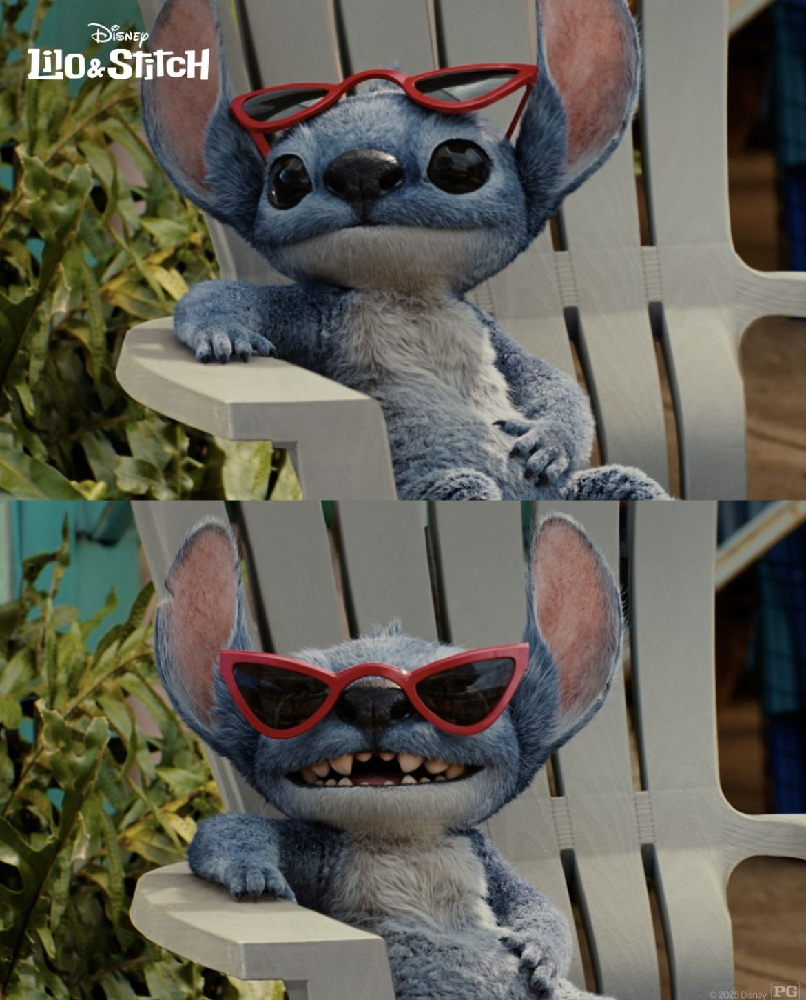

La Aventura:
Stitch fue creado como el Experimento 626 por el científico Jumba, diseñado para causar destrucción. Escapa a la Tierra y llega a Hawaii donde es adoptado por Lilo, quien le enseña sobre el amor, la familia y el significado de "Ohana".